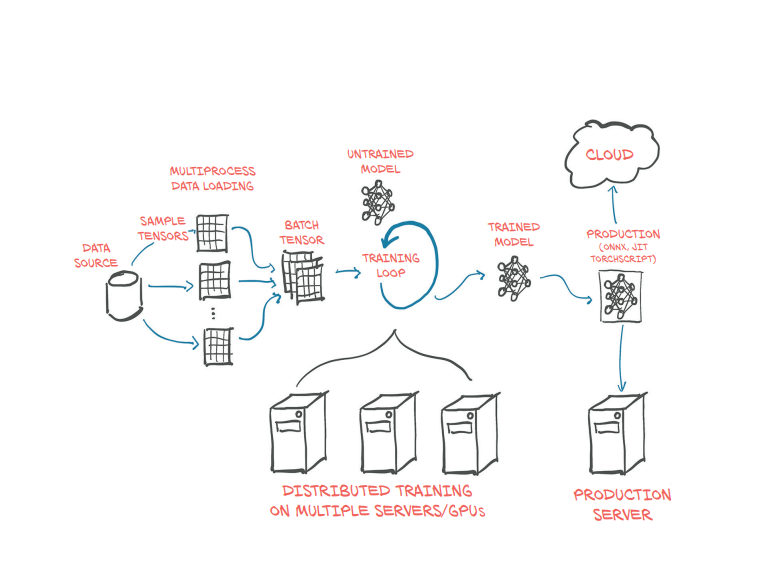

AI and Statistics
AI (Artificial Intelligence) is one of the most important and fastest-growing fields of technology today. Applications of AI are becoming ubiquitous, and solutions learned from data are increasingly displacing traditional hand-crafted algorithms. Machine Learning (ML) and Deep Learning (DL) are major branches of artificial intelligence (AI) that provide systems with the ability to automatically learn and improve from experience without being explicitly programmed.
This tutorial explores the fundamental theory and practical engineering of various Machine Learning and Deep Learning models, including classic algorithms like SVM, Decision Trees, and Naive Bayesian, as well as advanced architectures such as Convolutional Neural Networks (CNN), Recurrent Neural Networks (RNN), and Transformers. We will also demonstrate how to train and apply these models across diverse real-world applications.
Serving as the major foundational tool, Statistics underpins the entire scope of this tutorial.
Both Machine Learning and Deep Learning follow a pipeline structure to create and deploy AI-based systems. The pipeline commonly has the following form:

ML Pipeline Flow

An example pipeline based on Neural Network for Image Recognition
The ML Pipeline
- Data Ingestion: Gathering and loading data from various sources (databases, APIs, files).
- Preprocessing: Cleaning the data, handling missing values, and dealing with inconsistencies.
- Feature Engineering: Transforming raw data into features that better represent the underlying problem to the predictive models.
- Model Training: Feeding the prepared data to the chosen algorithm (like Decision Trees or SVM) to learn patterns.
- Evaluation: Testing the model's performance on unseen data to ensure accuracy and robustness.
- Deployment: Integrating the model into a live environment where it can make real-time predictions.
Data Ingestion
Progress in the last decade shows that the success of an ML system depends
largely on the data it was trained on. Instead of focusing on improving ML
algorithms, most companies focus on managing and improving their data.The first three blocks o pipeline—Data Ingestion, Data Preprocessing, and Feature Engineering—form is also called data preparation layer.Blocks are somewhat interchangeable.In certain cases Feature Engineering at the time of Data collection(Ingestion) itself
Data Ingestion, the first stage of the ML pipeline, involves a structured process of acquiring raw data and preparing its storage environment. This sub-pipeline ensures data is collected reliably and organized efficiently for subsequent processing.

Data Ingestion Sub-Pipeline (Acquisition and Storage Stages)
The Data Engineering Sub-Pipeline for ML/DL
The Data Engineering pipeline is responsible for transforming raw, disparate data into the clean, reliable, and accessible features required for model training and inference. It generally follows a structured ETL (Extract, Transform, Load) or ELT (Extract, Load, Transform) pattern, adapted for machine learning needs.
Stage 1: Data Acquisition & Ingestion (The "Extract" Phase)
This initial stage focuses on finding, collecting, and moving raw data from various sources into a central landing zone.
1. Finding Data Sources
- Internal Sources: Databases (OLTP/Transactional, Data Warehouses), Application logs, Sensor data, CRM systems, or existing data lakes.
- External Sources: Third-party APIs, public datasets, web scraping, or syndicated data feeds.
- Specific Data Types (e.g., Image/Video): Sources for unstructured data like images and video often include large public repositories (e.g., ImageNet, COCO, Open Images), proprietary camera feeds, or custom annotation/labeling services for specific domains.
2. Ingestion Modes
- Batch Ingestion: Processing large volumes of data at scheduled intervals (e.g., nightly jobs, weekly loads). Suitable for static datasets like historical sales or user demographics.
- Streaming Ingestion: Continuous, real-time processing of data as it's generated (e.g., stock market trades, website clickstreams, sensor readings). Requires technologies like Kafka or Pub/Sub.
3. Validation & Schema Check
As data enters the pipeline, basic validation ensures the data type and format conform to the expected schema (Schema-on-Read vs. Schema-on-Write).
Stage 2: Data Storage & Governance (The "Load" Phase)
This stage determines where the raw and processed data resides, optimized for both cost and query performance.
1. Storage Solutions
- Data Lake: Stores raw, uncleaned, and unstructured data (e.g., images, logs, text documents) in its native format, often on cloud object storage (S3, GCS). This is typically the initial landing zone.
- Data Warehouse: Stores structured, cleaned data optimized for analytical querying (OLAP). Ideal for structured features and aggregate data used in traditional ML.
- Feature Store: A specialized data system designed specifically for ML. It stores and serves curated feature vectors consistently for both training (batch access) and real-time inference (low-latency lookup).
2. Data Governance and Security
Implementing access controls, encryption, and anonymization/pseudonymization to ensure compliance with regulations (GDPR, HIPAA). Managing data lineage—tracking where data came from and all transformations applied.
Data Pre-processing
Data pre-processing is the critical stage that cleans, transforms, and prepares the raw data to be suitable for model training. It directly impacts model performance and stability.The block consists of three steps Data cleaning, Data Transformation and Data Reduction. These steps are not always followed strictly one after another in a rigid linear sequence.While they are presented sequentially in a list for logical organization, in practice, the process is often iterative and interdependent.Morevoer there specialized processing of each steps depending on the Learning application

1. Data Cleaning 🧹
This step focuses on fixing errors and inconsistencies in the data.
- Handling Missing Values: Identifying data points where values are absent and either:
- Imputing: Replacing them with a calculated value (e.g., the mean, median, or mode).
- Deleting: Removing rows or columns that have too many missing values.
- Handling Noisy Data: Correcting or smoothing out random error or variance in the data, which can result from collection errors or incorrect labeling.
- Outlier Detection and Treatment: Identifying data points that significantly deviate from the majority and deciding whether to remove them, cap them, or transform them, as they can disproportionately affect model training.
- Dealing with Inconsistent Data: Correcting structural errors and naming inconsistencies (e.g., 'NY' vs. 'New York') or incorrect data types.
2. Data Transformation 🔄
This step changes the format, scale, or distribution of the data into a numerical format that ML algorithms can process efficiently.
- Normalization and Scaling: Adjusting the range of feature values to a standard scale.
- Normalization (Min-Max): Scales values to a fixed range, typically [0, 1].
- Standardization (Z-score): Scales data to have a mean of 0 and a standard deviation of 1.
- Encoding Categorical Data: Converting non-numeric (textual) labels into numerical formats.
- One-Hot Encoding: Creates new binary columns for each category.
- Label Encoding: Assigns a unique integer to each category.
- Discretization: Converting continuous numerical data into a finite set of intervals or bins (e.g., replacing exact age with 'young', 'middle-aged', 'senior').
3. Data Reduction 📉
This step aims to obtain a reduced representation of the data that is smaller in volume but still produces the same analytical results, improving efficiency.
- Dimensionality Reduction: Reducing the number of features (columns).
- Feature Selection: Choosing a subset of the most relevant features.
- Feature Extraction: Transforming data from a high-dimensional space to a lower one (e.g., using Principal Component Analysis (PCA)).
- Data Compression: Encoding data to reduce storage space.
- Numerosity Reduction: Replacing actual data values with alternative, smaller representations (e.g., regression or clustering).
Feature Engineering (FE)
Feature Engineering (FE) is the pivotal step in the Machine Learning pipeline, defined as the process of transforming raw input data into features that best expose the underlying problem structure to a model.
The Primacy of Features in Classical ML
-
Necessity of Manual FE: In the era of traditional, shallow algorithms (such as Support Vector Machines, Decision Trees, and Naive Bayes), the quality of the model was almost entirely dependent on the quality of the human-engineered features. These models are weak at creating non-linear relationships, meaning preprocessing alone (cleaning and formatting data) is insufficient for learning and inference. Therefore, the data scientist was required to manually construct predictive signals (e.g., interaction terms, aggregation windows) to ensure the model's success.
-
Impact: In classical ML, the effort spent on Feature Engineering often yielded greater returns than tweaking the learning algorithm itself.
The Shift to Automatic Feature Learning
The rise of Deep Learning (DL) architectures fundamentally changed the role of manual FE, particularly for unstructured data.
-
Automation in DL: Modern deep networks, pioneered by architectures like the Convolutional Neural Network (CNN) in the 1990s, act as sophisticated, multi-layered feature extractors. These models automatically learn hierarchical, predictive representations directly from the raw data (e.g., raw pixels or text tokens).
-
Domain of Success: This automated approach has been highly successful for unstructured data (images, video, and text), where complex models like Transformers and CNNs have largely replaced the need for tedious manual feature extraction.
The Enduring Role of Manual FE
Despite the automation provided by deep learning, Feature Engineering remains critical, especially for specific data types:
-
For Structured Data (Manual Construction): For tabular and transactional data, manual feature construction remains a high-leverage activity. For example, in a customer churn prediction model, converting the raw transaction history into a feature like "Average transaction value over the last 30 days" or "Days since the last login" (a time-series lag) often provides a significant performance boost that deep networks cannot easily replicate.
-
For Unstructured Data (Advanced Manual Techniques): While automation dominates, foundational manual techniques are still used for smaller, specialized tasks or as model inputs. A key example for text data is using TF-IDF (Term Frequency-Inverse Document Frequency) to extract numerical features, which assigns a weight to each word based on its importance and rarity across the entire dataset, creating a large, sparse, and predictive feature vector.
-
Input Representation: Even in modern DL, feature engineering has shifted to engineering the input representation (e.g., Positional Encodings, Spherical Harmonics in 3D systems) to make the data consumable by the neural network more efficiently.
In essence, while the success of ML algorithms relies entirely on features, the task has evolved: from being a manual art form required for all data, to becoming an automated core function for unstructured data, while remaining a critical manual task for structured data.